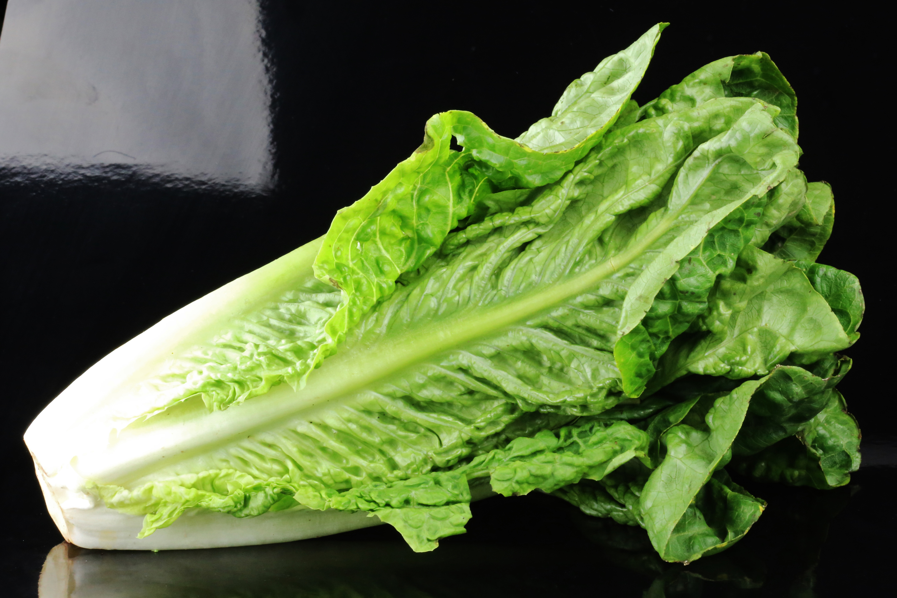

Lettuce (Lactuca sativa) is an annual plant of the family Asteraceae. It is most often grown as a leaf vegetable, but sometimes for its stem and seeds. Lettuce is most often used for salads, although it is also seen in other kinds of food, such as soups, sandwiches and wraps; it can also be grilled.[3] One variety, celtuce (asparagus lettuce), is grown for its stems, which are eaten either raw or cooked. In addition to its main use as a leafy green, it has also gathered religious and medicinal significance over centuries of human consumption.
